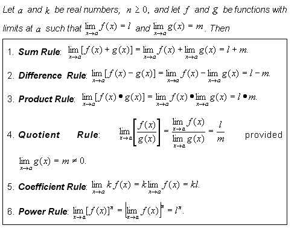
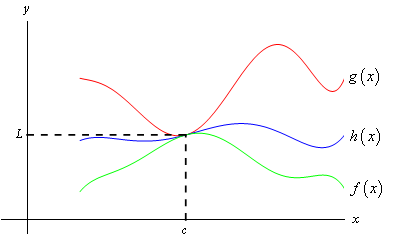

Algebraic Limits

In each operation involving limits, you first have to solve for the limit of ƒ(x) and g(x).
After you have solved each function's limit, you perform the indicated operation on the found limits.
In each operation involving limits, you first have to solve for the limit of ƒ(x) and g(x).
After you have solved each function's limit, you perform the indicated operation on the found limits.
Squeeze Theorem

The Squeeze Theorem, also known as the Sandwich Theorem, is used to find a limit of a function, using 2 other functions. The function we start with h(x), is the insides of the sandwich, and the other functions, f(x) and g(x), are the bread.
If g(x), the top piece of bread, is bigger than h(x), the insides, which is bigger than f(x), the bottom piece, the limit may be findable. Further, if the limit of both "bread" pieces are equal, we are two-thirds of the way to finding the limit. If both prior pieces of information are correct, and the limit of h(x), our original function, is equal to both limits of f(x) and g(x), then congrats, you found the limit of h(x) using the Squeeze Theorem.
Algebraic Manipulation

Algebra can be used to find the limit of a function. In the case above, you can multiply the original function by the conjugate of the numerator over itself, simply, and then plug in c to solve for the limit.